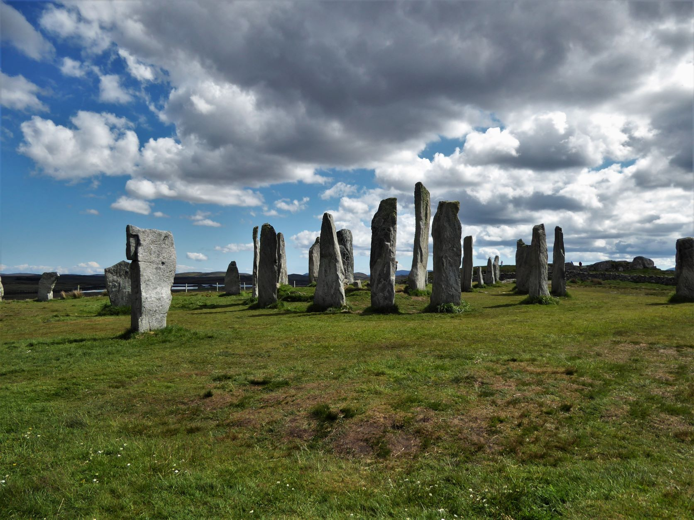

There is a joke among Faroese that the Faroe Islands are the only country in the world where light rain counts as good weather. After two weeks there, I can confirm that it is not really a joke.
The Faroes are eighteen islands in the North Atlantic, somewhere between Iceland and Scotland, with fifty thousand inhabitants and roughly twice as many sheep. The name itself comes from Old Norse Færeyjar which translates to Sheep Islands. That is exactly what they are. The Faroes have twice as many sheep as people and sheep stand on the cliffs, by the road, in construction sites and on the roofs of houses. Yes, actual roofs because many Faroese houses have grass roofs and instead of buying a lawnmower, you put a sheep up there. Maintenance, I was told, is minimal.
Free buses, costly cucumbers
I landed at Vágar in heavy rain and discovered within ten minutes that EU roaming does not apply here. The Faroes belong to Denmark but govern themselves and EU law ends where Faroese self-determination begins. Suddenly, I could not Google anything and could not check trail maps or bus timetables. From then on, every hike had to be planned in advance, with notes on paper.Tórshavn, the capital, is one of the smallest in the world. It consists of coloured wooden houses along the harbour, a tiny fortress and a peninsula called Tinganes where the Faroese parliament has met since the ninth century. The town feels like a well-organised village. Within the city limits, all buses are free, which I used liberally even when it meant accidentally riding out of Tórshavn entirely and ending up at the foot of a fjord, with waterfalls running straight off the mountainsides into the sea.
By day three I had also discovered that grocery prices on the Faroes are an experience by themselves. A small bag of pasta costs three euros and a cucumber four euros. Overall the cost of living is roughly three times as high from what I know from Germany and fresh produce is even more expensive. The Faroes are about twenty percent more expensive than mainland Denmark, which is itself one of the most expensive countries in Europe. My menu narrowed accordingly and pasta with tomato sauce became a constant, with, of course, an occasional luxury splurge on Faroese specialities.
Language, weather, and what not to mention
Faroese sounds like nothing I had heard before. It descends from Old Norse, so it is distantly related to Icelandic and Norwegian, but its grammar was later shaped by Danish which gives it an odd in-between status that makes the spoken language softer and more melodic than I had expected. I could half-decipher written Faroese in the supermarket, because many words follow Germanic roots. Spoken, I understood essentially nothing.
A few words stuck with me anyway. Takk for thank you, Virðing for respect. The word appeared on all hiking signs across the islands and asked visitors to treat the wildlife and landscape accordingly. Fjall for mountain and Fossur for waterfall, which on the Faroes is a high-frequency word.
One cultural footnote I will not forget is that Denmark is absolutely off-limits as a small-talk topic. The Faroese govern themselves, have their own language, their own flag, their own parliament and the relationship with Copenhagen is complicated. Anyone wanting to make conversation with a Faroese person should talk about the weather (always works), the sheep (very effective) or the islands themselves (best of all). About Denmark, if at all, only carefully.

Hiking in eighty-kilometre winds
The Faroes are one of the windiest countries in Europe and it shows. I did hikes where the gusts pushed me over more than once and on one cliff I had to stay ten metres back from the edge, because the wind shifted so unpredictably that any closer would have been dangerous. Waterfalls that normally fall downward sometimes dissolve in midair on the Faroes and the wind turns them into fine mist. Some even blow back upward. It looks absurd, but it actually happens.Even so, every hike was worth its weather. The climb up Villingadalsfjall, the third-highest mountain in the Faroes at 841 metres, was a steep slippery slope but with a spectacular view at the end. I could see all surrounding islands, the sea and on the cliff opposite, a village that clung to the mountainside like a model. On another hike, from Saksun to Tjørnuvík, I walked up through the fog into an almost surreal clarity. The clouds were below me, the sun above and I looked over cliffs that looked like they belonged in a fairytale.
A trail on the island of Kalsoy led to a lighthouse and, what I had not known in advance, to James Bond's grave. The headstone is there because the final scene of No Time To Die was filmed on Kalsoy. Tourists now make a small pilgrimage to a fictional grave that looks completely at home where it stands.
A roundabout under the sea
One of my favourite Faroese details is that the islands of Streymoy and Eysturoy are connected by an 11-kilometre underwater tunnel that descends 187 metres below sea level at its deepest point. In the middle of this tunnel sits the world's first and so far only underwater roundabout. It opened in December 2020.
And not just that because the roundabout was turned into an artwork. In its centre stands a colourful lit pillar that, as you drive past, creates the impression of a jellyfish and hence its name, the Jellyfish Roundabout. Around the pillar, dancing human silhouettes by the local artist Tróndur Patursson show the shape of a traditional Faroese chain dance. I drove through it three times in one day with the bus, simply because it was raining so heavily outside and this was one of the few sights indoors.
Sheep with cameras
On a roof in Tórshavn I once saw a sheep watching the whole neighbourhood with the air of someone who was hired to do that. In a way, it was. In 2016 the Faroes launched a project called Sheepview360 which included sheep fitted with small cameras on their backs because Google had decided the islands were too small to send Street View cars. The result was Google Street View, filmed from sheep level. Google eventually did send cars but the original footage still exists and is as charming as it sounds.
Faroese sheep also look different from their Scottish cousins. They are shaggier with denser wool and almost always multi-coloured. There are several distinct breeds, each with its own name and at one bus stop I found a poster cataloguing them like Pokémon cards.

Puffins on Mykines
The day I would most like to do over again was the trip to Mykines. The westernmost island of the Faroes is only reachable by ferry or helicopter and the ferry only runs when the weather and the swell agree. Two of my three planned day trips there were cancelled. On the third, it ran.
Mykines is famous for its puffin colonies. Around 550,000 breeding pairs live there during the season and it is the second-largest bird population in the Faroes. I climbed a long staircase up from the harbour and suddenly stood inside a flock of puffins. They were everywhere, not just at the cliff edge but also inside their nesting burrows, in the sun and in the air. You stood still and the birds flew over your shoulders.
They are surprisingly loud in flight, about as loud as pigeons, but they can do something pigeons definitely cannot. They dive up to 180 metres deep. What I found most interesting was learning that puffins lay only one egg per year and can live up to sixty years. The birds I watched that day might have been older than I am. They were brooding on those exact cliffs before I was born.
The ferry back was its own small adventure. The waves were so strong that the boat half-vanished between waves and I clung to the railing for the whole crossing. From one stretch of cliff I caught a brief glimpse of seals swimming.
My final impression
What stays with me is the feeling of a place that does not let itself be hurried. The Faroese live with the weather, not against it. If the ferry is not running, it is not running. If the wind is too strong, you stay inside and drink tea. Nobody apologises for the weather and it is simply part of being there.
The Faroes do not try to charm anyone. They are not arranged for visitors and somehow there is a relief in that. In being somewhere that does not need you to enjoy it but the strange thing is, you do anyway. They are among the most beautiful places I have ever been to and the people who live there are among the kindest I have met.